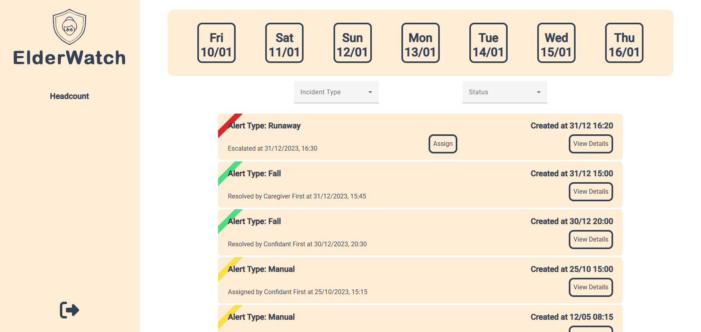

<div class="py-12 bg-transition">
    <div class="container mx-auto flex flex-col lg:flex-row justify-center px-4 sm:px-8 lg:px-16">
        <div (click)="navigate('/angular-challenge')" class="bg-white rounded-lg shadow-lg overflow-hidden lg:w-1/2 hover:cursor-pointer">
            
            <div class="p-6">
                <h3 class="text-gray-800 text-2xl font-semibold mb-2">Angular challenge</h3>
                <p class="text-gray-700 text-lg">Trip planner applicatie gemaakt in team, met coaching van dotNET lab.</p>
            </div>
        </div>

        <div (click)="navigate('/project4.0')" class="bg-white rounded-lg shadow-lg overflow-hidden lg:w-1/2 mt-8 lg:mt-0 lg:ml-14 hover:cursor-pointer">
            
            <div class="p-6">
                <h3 class="text-gray-800 text-2xl font-semibold mb-2">Project 4.0: ElderWatch</h3>
                <p class="text-gray-700 text-lg">Voor de eerste keer applicatie gemaakt voor een klant samen met studenten van andere richtingen.</p>
            </div>
        </div>
    </div>
</div>